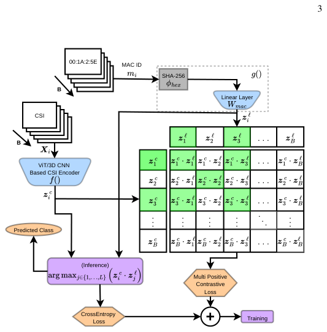

Dynamic and Open-Set RF Fingerprinting and Localization in Crowded Indoor Environments through Contrastive Channel State Information Learning
CSI 而非 IQ 做 RF 指纹：用 multi-positive 对比学习把 ESP32 CSI 嵌入和 MAC ID 嵌入对齐，外加 GEM+CUSUM 开放集检测器拒未注册设备。
关键贡献
- 把 CSI-RFF 当作 CSI ↔ MAC-ID 的多正例对比对齐——比传统分类头在动态信道下稳定
- GEM+CUSUM 序贯检测做开放集，拒绝未注册发射机（不只是把它们塞进 N+1 类）
- 完整在低成本 ESP32 + 真实公共建筑（≈300 人流）部署，一套系统认证+定位
解读
背景与问题：物联网设备指数级增长让抗 spoofing / replay / key-leak 的认证成刚需，密码学手段在轻量级 IoT 上又算不动。RF 指纹 (RFF) 利用硬件不可复制的瑕疵（DAC 非线性、PA 失配、LO 频偏等）做物理层身份认证。但 90% 的 RFF 工作依赖 IQ 采样、需要 SDR/NIC 这类专业硬件；CSI 在每个 WiFi 包里都有、ESP32 这种 5 美元 MCU 用开源工具就能拿到，是更现实的认证媒介。
现有方案的不足：(1) 大多数 CSI/IQ RFF 是静态评测——发射机和接收机位置在训测试间不变，模型实际学到的是位置依赖的信道因子 h_k 而非真实的器件指纹 ψ_k（CSI 模型 Ĥ_k = h_k · ψ_k + ε_k），换位置就崩；(2) Transformer / 3D-CNN 在 CSI-RFF 上几乎是空白，虽然 CSI 天然是 time-freq-feature 张量；(3) 闭集假设普遍——把未注册的恶意发射机硬塞进 L 个已知类，无法拒绝。作者指出还没有任何工作同时做到「动态信道 + transformer/3DCNN + 开放集 + 公共建筑真实人流 + ESP32 硬件」。
核心方法（ContraCSI）：把 RFF 建成「CSI 嵌入空间 ↔ MAC-ID 嵌入空间」对齐问题：
1. CSI encoder f(X_i)：输入 CSI 窗口 X_i ∈ ℝ^{64×2×N}（64 子载波 × 实/虚 × N 包）。三种 backbone 同台 PK：ViT-base（resize 到 224×224 复制成 3 通道）/ 轻量 3D-CNN（3 层 3×3×3 conv 直接吃 [B,1,N,64,2]）/ 改造 R3D18。输出 L2 归一化嵌入 z^c_i。
2. Label encoder g(m_i)：MAC 地址 → SHA-256 哈希 φ_hex(m_i)（确定性 base code）→ 可学线性投影 W_mac → L2 归一化得到 z^ℓ_i，与 CSI 嵌入在同维空间。
3. 多正例监督对比损失：批内同 MAC 的多个样本都是正样本，避免 CLIP 单正例把同类推开的问题。损失对称由 row-wise (CSI→label) 和 column-wise (label→CSI) 平均：
L_{c→ℓ} = -(1/B)Σ log(Σ_{j∈P(i)} e^{S_ij} / Σ_{k≠i} e^{S_ik})
4. 开放集检测：在 Lite3D-CNN 嵌入上跑 GEM (Geometric Entropy Minimization) 算异常分数，再用 序贯 CUSUM 检验 累积证据——超过阈值就判定非注册设备，否则交给闭集分类器。
5. 顺手做定位：3 个 anchor 发射机 + CSI 距离估计 + 三边定位 (trilateration) 给出室内坐标 (x̂_r, ŷ_r)。

实验设置：南佛罗里达大学的 Marshall Student Center（≈300 人自然走动的公共建筑）布 10 个 CSI 采集点，多日采集；ESP32 + lightweight CSI toolkit；对比闭集 baseline (单独分类器) 和开放集 baseline (prototype learning)。
关键结果：
- 闭集：ViT-Contra 在动态信道下显著优于 standalone 分类器；
- 开放集：Lite3D-CNN + GEM + CUSUM 能在保持高合法识别率的同时拒未注册设备；
- 多日 / 多位置 / 不同 SNR 下泛化稳定；
- 三边定位 demo 给出可接受的室内坐标误差，说明「同一套 CSI 流水线」可以认证 + 定位两用。
局限与可推广性：(1) 论文重点在系统设计与真实实验，未公开数字精度（论文里以图为主）；(2) 注册类数 L 增长后开放集阈值需要重新校准；(3) ESP32 子载波数只有 64，更高分辨率（Intel 5300/IWL 系列）能否进一步抬升精度未做。
原始摘要
Radio Frequency Fingerprinting (RFF) using deep learning has gained attention as a complementary approach to cryptographic authentication, offering resistance to spoofing, replay attacks, and key leakage. While most RFF approaches rely on In-Phase and Quadrature (IQ) samples, Channel State Information (CSI) has emerged as a more accessible alternative, enabling device authentication through physical-layer characteristics. In this work, we propose ContraCSI, a CSI-based contrastive learning framework for RFF using low-cost ESP32 devices.